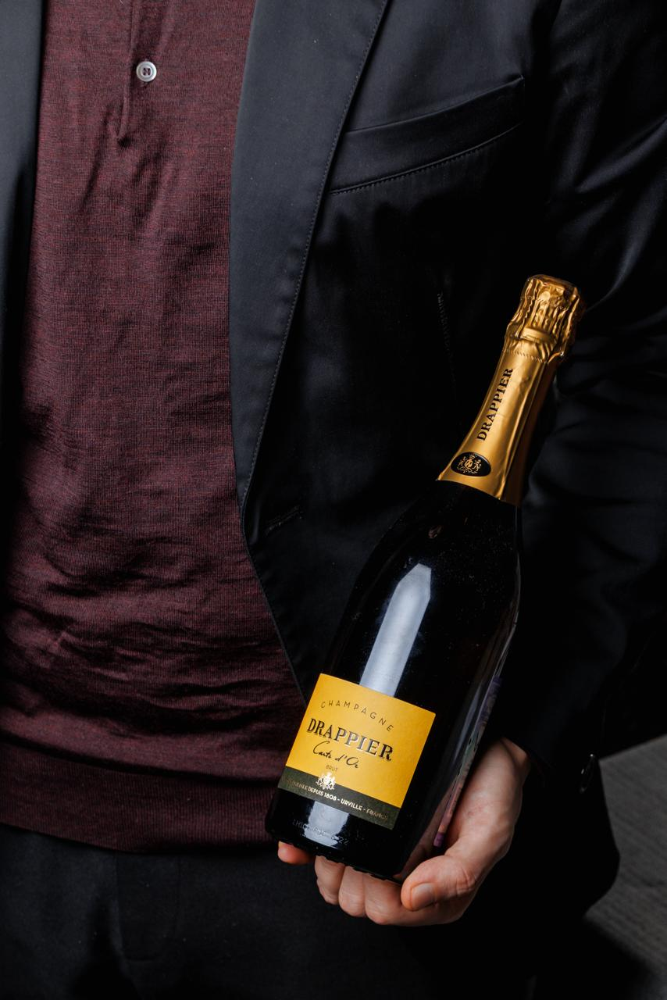

5 cортов
Дегустация вин Италии
-
15 марта 2026, 19:30
-
Набережная Мартынова, 16
-
3500 ₽
Мы знаем, что Италия — страна, где вино пьют с уважением, но без лишнего пафоса. В четверг, 15 марта, в 19:30 мы воссоздадим эту атмосферу в нашем зале. Это не просто дегустация, а полноценный гастрономический ужин, где каждый гость почувствует себя гостем на винограднике в час сбора урожая.
Программа вечера: От аперитива до дижестива
1. Приветственный бокал (Accoglienza) Вечер начнется с бокала искристого Franciacorta Brut — главного конкурента шампанского из Ломбардии. К нему подадут мини-закуски: капрезе с шариками моцареллы и мини-брускетты с песто.
2. Белое: Морской бриз Сардинии (Bianco) Первый полноценный курс — Vermentino di Sardegna. Свежее, минеральное вино с легкой горчинкой в послевкусии. Гастропара: Карпаччо из дорадо с цитрусовым соусом и оливковым маслом первого отжима.
3. Розовое: Страсть юга (Rosato) Мы развеем миф о том, что розовое — несерьезно. Cerasuolo d’Abruzzoвпечатляет насыщенным цветом и ароматом дикой клубники и граната. Гастропара: Тартар из креветок с манго и авокадо.
4. Красное: Душа Тосканы (Rosso) Сердце вечера — легендарное Chianti Classico Riserva. Вино выдерживалось в дубовых бочках не менее 24 месяцев. В бокале раскрываются ноты вишни, табака и кожи. Гастропара: Домашняя паста паппарделле с тушеной говядиной (рагу из баранины) и сыром пекорино. Классика, которая работает безотказно.
5. Легенда Пьемонта: Великий и могучий (Il Grande Rosso) Для искушенных — Barolo DOCG. Его называют «Королем вин и вином королей». Танничное, мощное, с ароматом розы, трюфеля и вишневого варенья. Гастропара: Мясное ризотто с белыми грибами и трюфельным маслом.
6. Финал: Сладость и крепость (Dolce & Forte) Завершим вечер классическим итальянским дуэтом — десертной Moscato d’Astiс нотками персика и шалфея в паре с авторским десертом «Тирамису». Для желающих — ароматная граппа или лимончелло.